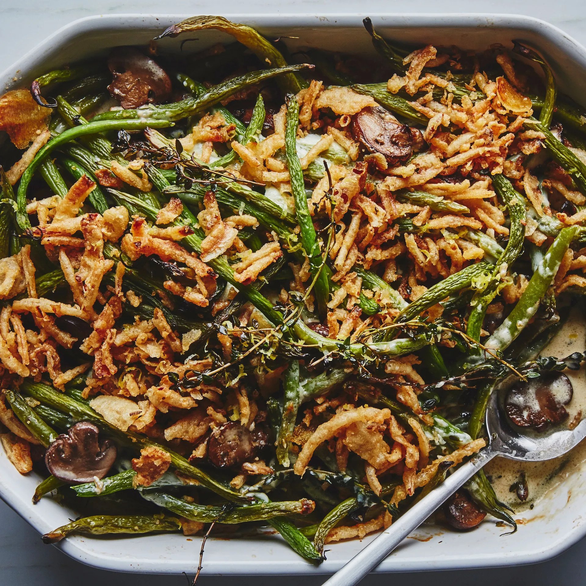

Green Bean Casserole

Description
The following is a recipe from Bon Appétit. The recipe is by Chris Morocco. The photograph is by Alex Lau.
I have made this recipe a few times, mostly for Thanksgiving. I have found that this is the best way to make and enjoy Green Bean Casserole. It always comes out super delicious! I usually bake it for 30 minutes, wrop it and take it over to where we are getting together. Then there I bake for another 20 minutes, add onions and bake for additional 5 minutes
Ingredients
- 2 lb. green beans
- Kosher Salt
- 2 Tbsp. olive oil, divided
- 1 lb. crimini mushrooms, sliced, divided
- 6 Tbsp. unsalted butter, divided
- 4 Large sprigs thyme
- 2 Tbsp. all-purpose flour
- 1 1/4 cups whole milk
- 1 cup heavy cream
- 4 garlic cloves, finely grated
- 1/2 cup grated Parmesan
- Freshly ground black pepper
- 3/4 cup French's fried onions
Steps
- Preheat oven to 375°. Working in batches, cook green beans in a large pot of boiling salted water until bright green and halfway to tenderness, about 3 minutes per batch. Drain and let cool; trim stem ends
- Heat 1 Tbsp. oil in a large skillet over medium-high heat. Cook half of mushrooms without stirring, until golden brown underneath, about 2 minutes.Toss and continue to cook, tossing occasionally, until browned on both sides, about 3 minutes more. Add 2 Tbsp. butter and 2 thume sprigs to pan. Cook, tossing occasionally, until butter browns and mushrooms are dark browna dn very tender, about 4 minutes longer. Season with salt and transfer to a plate. Repeat with 2 Tbsp. butter, salt and remaining oil, mushrooms and thyme.
- Melt remaining 2 Tbsp. butter in a large saucepan over medium-low heat. Whisk in flour and cook, whisking occasionally, until roux is golden brown and smells mildly nutty, about 4 minutes. Whisk in milk and cream. Increase heat and bring to a simmer, whisking often and cook until béchamel sauce is thick and bubbling, about 5 minutes. Remove from heat and whisk in garlic and Parmesan; season with salt and pepper.
- Arrange green beans and mushrooms in a 2-qt. baking dish. Pour sauce over (it may not look like enough, but it will get saucier as it bakes). Cover tightly with foil and bake until sauce is bubbling, 25-30 minutes. Uncover and continue to bake until casserole is lightly browned on top and around the edges, 15-20 minutes longer. Top with fried onions and contunue to bake until onions are slightly darker and fragrant, about 3 minutes. Let sit 10 minutes to set before serving.